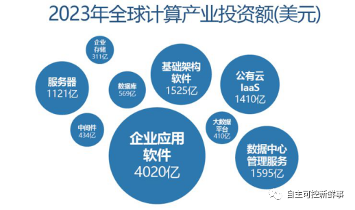

“十四五”开局，信创产业发展新蓝海格局已现！
2021年是“十四五”开局之年、全面建设社会主义现代化国家新征程的开启之年。中央经济工作会议指出，要实现重要产业、基础设施、战略资源、重大科技等关键领域安全可控，增强产业链供应链自主可控能力，信创产业将成为重塑中国IT产业基础、加快发展现代产业体系、推动经济体系优化升级的重要力量，意味着信创产业也将迎来一个现象级的新蓝海。
当前信创产业发展现状如何？未来发展趋势又是怎么样的？接下来小编就从以下几个方面来揭开这个催生万亿级蓝海市场产业的“神秘面纱”。
政策发力，信创产业发展已上升为国家战略
《中共中央关于制定国民经济和社会发展第十四个五年规划和二〇三五年远景目标的建议》提出，2035 年我国在“科技实力”方面“将大幅跃升”，“关键核心技术实现重大突破，进入创新性国家前列”；《关于新时期促进集成电路产业和软件产业高质量发展若干政策的通知》再次强调要在先进存储、先进计算、先进制造、高端封装测试、关键装备材料、新一代半导体技术等领域，结合行业特点推动各类创新平台建设；2020年中央经济工作会议把强化国家战略科技力量，增强产业链供应链自助可控能力列为2021年工作重点，有望推动信创产业进程，加快打造完善产业链......从国家规划层面来看，信创产业发展已上升为一项国家战略。作为国家科技创新、数字经济化转型和提升产业链发展的关键，助推信创产业实现蓬勃发展是奔向科技创新“星辰大海”，实现核心技术自主可控的重要布局。
自主可控新鲜事整理
抢抓风口，各地政府相继发力布局信创产业
随着国家政策大力支持和“新基建”在全国范围内的快速铺开，2020年，在复工复产、“新基建”全面启动的背景下，信创产业高速发展，各地信创项目开始大面积铺开，信创企业集中签约、信创产业联盟相继成立。北京、上海、广州、广西、浙江、福建等省市在地区数字经济发展规划、新型基础设施建设计划、电子信息产业发展计划中明确了当地信创产业的发展办法及具体目标。信创产业也随之出现了一个现象级的风口，全产业迎来了大踏步发展的机遇期。
自主可控新鲜事整理
信创市场边界不断扩展 产业发展进入良性循环
随着党政市场的成功示范，2020年成为信创落地元年，相关行业实现技术突破，生态融合发展，产品快速迭代，市场迎来发展春天。宏观上呈现体系化、一体化、集约化、自主化、标准化的发展新趋势，新兴技术融合、产业集群、供应链安全等已成为业界关注的新发展理念，龙头企业的行业“领头羊”地位日益凸显。
从产品和技术发展上看，纵观信创产业近年来发展，不管是CPU、OS、数据库、中间件还是PC终端、服务器、存储、外设等都呈现出在技术、产品以及市场等相关生态从重构、融合到逐渐成熟发展的进程，产品和技术已从“基本可用”向“好用易用”大跨步迈进。“整芯铸魂“已基本完成，统一和融合并举，核心技术路线逐步收敛。数据库从集中式向分布式拓展，流、图、信息检索等数据库自主化程度不断；消息中间件、交易中间件、对象中间件等产品分类不断细化；EDA设计工具等基础工具类、云计算等平台类、即时通讯等应用类、地理信息等解决方案类产品相继走入人们视野，为信创产业发展注入“活水”；云技术已经实现了探索到应用的转变，政务云替代试点已基本完成，基于信创产品的云应用需求爆发。
从信创生态建设方面，企业间资源共享、集体赋能、同进同退，协同突破技术瓶颈。投入了大量时间和精力共同研发、适配产品，不断推出全栈解决方案，兼容适配灵活稳定，可根据需求自由替换局部产品、安全稳定。这种前所未有的联合创新力度，让信创产业生态建设迈出了实质性的一大步，信创生态会逐渐从目前复杂的网状结构，进阶成较为清晰的链状结构，从而驱动产业优胜劣汰和供应关系整合，向良性方面发展。同时，这种以更开放的心态推动产业升级和生态繁荣的发展理念，快速吸引了协同办公、人工智能、新型网络等颠覆性、革命性技术向信创产业延伸，未来将给予用户更多元化、多场景的优质服务，这一进阶也必将推动信创产业发展进入良性循环的轨道。
从市场规模上看，近几年我国信创产业一直保持稳步发展中，信创市场正加速从党政向行业推进。根据观研天下数据，2020年我国信创市场规模为1.05万亿，未来随着国家政策在这方面的倾斜，行业市场规模将会越来越大，2025年市场规模将稳步增长至1.3万亿。截至2017年共有近500家单位参与专项研发，累计投入5万名研发人员，申请专利8900余项，新增产值1300多亿元。
数据来源：观研天下
2020年12月14日，中国芯应用创新高峰论坛披露飞腾和龙芯CPU单颗出货突破百万。飞腾全年签约量/出货量整体较高，其中去年发布的桌面CPU飞腾FT-2000/4作为首款在CPU层面有效支持可信计算3.0标准的国产CPU，成为目前飞腾CPU产品中首个销售量突破百万个的产品。同时，龙芯系列产品在安全类应用方面，高质量等级芯片销售量超过10万颗；民用信息化上，党政、教育等出货量超过100万颗；在网络安全、能源、交通、光电等方面，基于龙芯的IP授权超过1000万颗。国产CPU销量高涨，预计明年党政信创规模有望进一步提升。此外，行业信创发展迅猛，金融、通信、能源等行业应用相继启动。
随着信创产业生态的创新能力和技术水平不断提升，信创产业力量集聚，产业资源集约化配置，服务效能提升，产业链日趋成熟，布局和格局逐渐明朗，助推我国信创产业进入快速发展期。
行业信创加速启动将迎来“全面开花”新阶段
从我国信创产业的发展来看，政务先行重点行业陆续拉开帷幕将成为信创行业的主旋律。以操作系统、CPU、数据库、整机等为代表的国产力量，其自主研发能力不断提高、生态愈发繁荣，国产软硬件产品必将成为行业信息化应用创新和新型基础设施建设的新选择。
电信运营商行业信创全面提速。2020年5月6日，中国电信（2020年）服务器集中采购项目首次将全国产化服务器单独列入招标目录，释放信创项目启动重要信号；2020年6月23日，中国移动发布2020年PC服务器集中采购项目中标公告，华为、中兴、中移系统集成、烽火、中科可控等公司入围，共同分享80亿大单；2020年9月，中国联通公布2020-2021年通用服务器集中采购项目招标结果，华为、紫光华山、中兴、浪潮、烽火超微、神州数码等11家企业入围；2020年11月30日，金融信息技术创新生态实验室揭牌仪式在北京鲲鹏联合创新中心举行。
金融行业落地较快。2020年是中国银行业IT架构转型的重要一年，2020年9月，万里开源中标中国光大银行开源数据库软件现场服务选型入围项目；10月19日，易鲸捷中标4.26亿元贵阳银行贵阳银行核心业务系统易鲸捷国产数据库应用项目；11月10日，中国电子与浦发银行签署战略合作协议；11月30日，金融信息技术创新生态实验室成立。金融领域对软硬件产品的安全可靠性要求极高，目前信创从底层软硬件到上层应用、核心业务系统陆续开始在大行、中小行招标，表明国产软硬件技术能力及稳定性逐渐获得认可，未来将逐步起量。
据赛迪顾问预测，中国银行业整体IT投入2018-2023年的年均复合增长率为11.16%，到2023年将突破2000亿元人民币。金融信创作为银行的主要投入方向，未来三年增长可期。建行、工行正大规模采购国产化替代设备，这些信息无一不在预示着信创产业的上行拐点已至。
其他行业方面，12月3日，中国长城出资1.0071亿元对中电智科进行增资，中电智科主要以可编程逻辑控制器PLC为核心产品，打通制造端国产化能力，信创布局进一步延展至工业控制领域。
可以预见，随着金融、能源、工控、电信、交通、医疗、教育为代表的重要行业和关键领域陆续开启国产化替代进程和多元算力布局，信创产业生态将生机盎然。
“十四五”期间，信创产业的支撑范围将更广泛，在云计算、物联网、工业互联网驱动下，产业将加速进入研发、生产、应用、持续发展的“深水区”，持续促进底层能力的提升，上层业务不断拓展，信创产业边际不断拓宽。同时，随着运营商行业多样性算力布局、金融行业IT架构转型等重点行业需求加速释放，能源、工控、电信、交通、医疗、教育为代表的重要行业和关键领域陆续开启国产化进程、布局多元算力，信创行业将迎来万亿级市场。
未来，信创产业将是关键领域的全面安全，从单一到重点领域，从软硬件到云的全面升级。2021年重要行业的信创市场即将迎来“全面开花”的新阶段。
信创+云发展构建安全可靠坚实基础
过去几年，在国家相关政策及市场的驱动下，中国云计算产业获得了蓬勃发展。上云的主力军已经从互联网行业快速渗透到政府、电信、金融、交通、能源、教育、医疗、制造等传统领域，“上云用云”成为产业关注的焦点。基于数据合规性、安全性、私密性等多方面考量，这些领域要求所采用的云要实现从芯到端到云的本质安全，信创+云解决方案将成为政企、传统行业用户上云的必然选择。
国内厂商基于云计算技术，自主研发，适配国产CPU技术架构和国产操作系统等自主可靠技术及设备，发挥云计算高可靠性、高通用性、高可扩展性及敏捷快速、弹性灵活等特征，为大型企业或集团，提供“云+端”的全面产品，提供以企业云服务、应用场景为主的云产品，具备全栈式云服务能力，从而满足企业不同的上云方式，推动企业数字化、智能化转型。在此背景下，信创+云迎来了黄金发展阶段。
来源：飞腾白皮书,华泰证券研究所
此外，基于云服务衍生的超算服务，已成为城市、行业、企业应用的独特场景。2020年，最新的全球超级计算机 TOP500 发布，榜单显示中国超算占全球在榜总算力的 25.6%。据业内专家分析，2021年所有的企业将会享受到基于云的超算服务。
2020年11月全球超级计算机 TOP500国家分布图
在超算发展的同时算力也成为影响数字经济发展的核心要素，多元化的场景应用和不断迭代的新计算技术，推动计算和算力不再局限于数据中心，开始扩展到云、网、边、端全场景。
产业发展趋势持续看好 信创产业格局或将重塑
当前，我国信创产业正在加速落地和实践，产业发展趋势向好，多家券商、机构、媒体出具报告或深评看好未来发展：
- 东吴证券表示，去年以来，信创的芯片和操作系统竞争格局逐步清晰，今年开始行业口信创将开始放量，空间相对党政公文系统提升近一个数量级；
- 信达证券认为国产替代发展到现阶段，产品已经进入了一个创新的阶段，芯片和生态成为了信创真正的创新点；
- 据IDC报告，到2023年，全球计算产业投资空间1.14万亿美元。中国计算产业投资空间1043亿美元，即7300亿元，接近全球的10%，是全球计算产业发展的主要推动力和增长引擎；
- 观研天下表示，我国自主可控的市场规模 2020 年为 1.05 万亿，未来随着国家政策在这方面的倾斜，行业市场规模将会越来越大，2025 年市场规模将稳步增长达到 1.3 万亿。

来源：鲲鹏计算产业发展白皮书然而，信创产业万亿市场规模下还无真正巨头，在格局分散和缺乏规模用户群等挑战下，基于强强联合的链条生态整合可成为破局之策。可以预见，信创产业必将迎来重大发展机遇，有望带来格局重塑的机会。